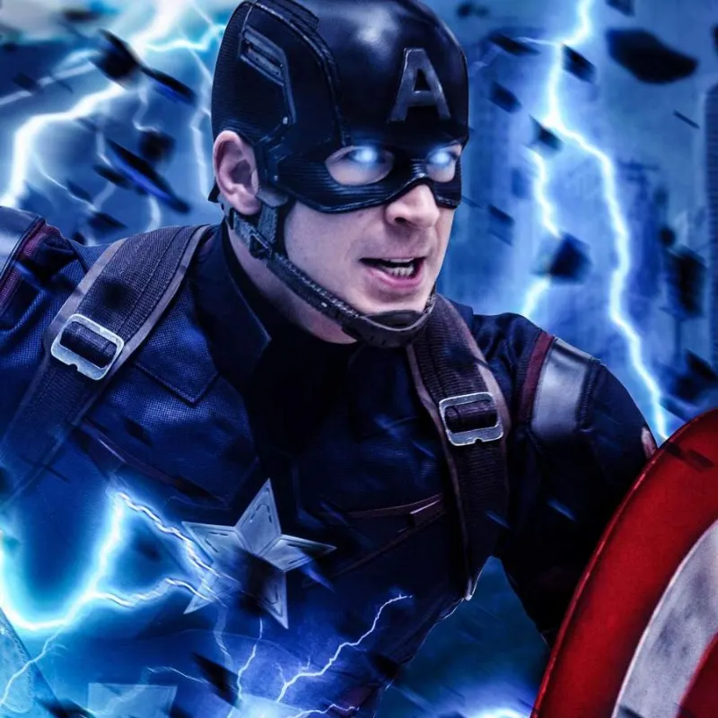

Nombre real: Steven Grant Rogers
Alias: El Primer Vengador / El Hombre fuera de su tiempo
Base de operaciones: Nueva York / Instalaciones de los Vengadores
Afiliación: Vengadores, S.H.I.E.L.D., Ejército de los EE. UU.
Steve Rogers nació en Brooklyn, Nueva York, durante la Gran Depresión. A pesar de crecer como un joven frágil y enfermizo, poseía un espíritu e inquebrantables ideales de justicia. Al estallar la Segunda Guerra Mundial, intentó enlistarse repetidamente sin éxito hasta que fue seleccionado para el proyecto secreto "Operación Renacimiento". Tras recibir el Suero del Súper Soldado y radiación de rayos Vita, Rogers alcanzó la cúspide física del potencial humano, convirtiéndose en el Capitán América.
Armado con su indestructible escudo de Vibranium, lideró a los Comando Aulladores en misiones decisivas contra la división científica nazi, HYDRA. Durante su enfrentamiento final en el Ártico, Rogers sacrificó su vida estrellando una nave enemiga en el hielo. Tras permanecer congelado durante décadas en estado de suspended animation, fue despertado en el mundo moderno por S.H.I.E.L.D., asumiendo el liderazgo táctico de los Vengadores frente a nuevas amenazas globales.